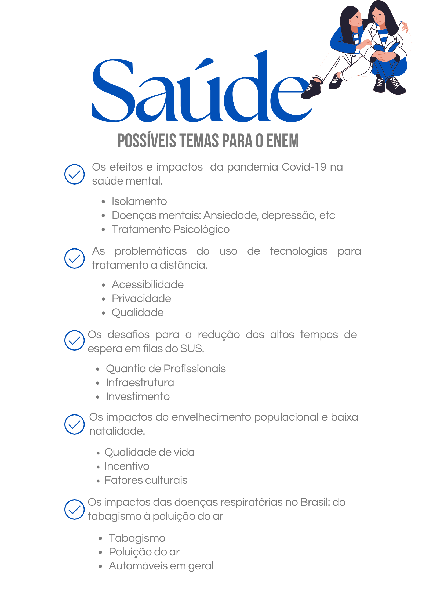

Saúde e o alto tempo de espera do SUS
Argumento de autoridade De acordo com o profissional da saúde Paulo Pego Fernandes, em entrevista ao G1, o tempo médio de espera para um transplante de órgão no Brasil pode variar de 3 a 12 meses, o que evidencia falhas logísticas e estruturais no funcionamento do Sistema Único de Saúde (SUS). Essa informação reforça a urgência de reformulações no sistema. Argumento histórico Os atuais problemas estruturais do SUS estão ligados a um histórico de baixos investimentos em educação e formação de profissionais de saúde, agravado por décadas de políticas populistas que priorizaram soluções imediatistas em detrimento de melhorias sistêmicas e duradouras. Argumento de exemplificação A ineficiência do atendimento rápido no SUS ficou evidente durante a pandemia da COVID-19. A alta demanda por leitos, UTIs e respiradores fez com que profissionais de saúde tivessem que tomar decisões trágicas sobre quem receberia atendimento e quem não, revelando o colapso do sistema diante de situações críticas. (Sugestão: inserir um exemplo real com nome e local, caso deseje maior impacto.) Argumento de comparação Quando comparado a sistemas de saúde pública de países como Noruega, Reino Unido e Países Baixos, o Brasil apresenta um dos maiores tempos de espera para procedimentos cirúrgicos e transplantes, o que evidencia desigualdades na gestão e na eficiência da saúde pública em nível internacional. Argumento de raciocínio lógico Se o tempo de espera para cirurgias e transplantes no SUS for reduzido, mais vidas poderiam ser salvas, principalmente entre populações de baixa renda que dependem exclusivamente do sistema público para acessar cuidados médicos essenciais. Isso demonstra como a melhoria no atendimento impactaria diretamente a saúde coletiva. Argumento de causa e consequência A demora no agendamento de consultas, cirurgias e transplantes no SUS leva a consequências graves: agravamento de doenças, mortes evitáveis e sofrimento prolongado para milhares de pessoas que não conseguem o atendimento necessário em tempo hábil.
